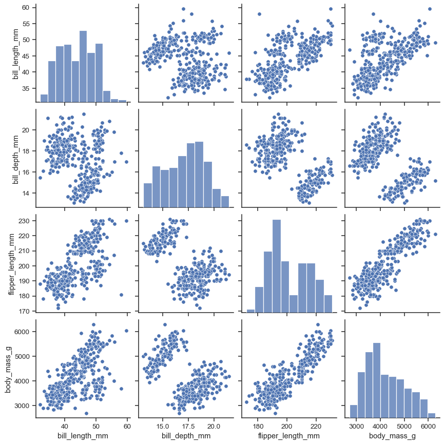
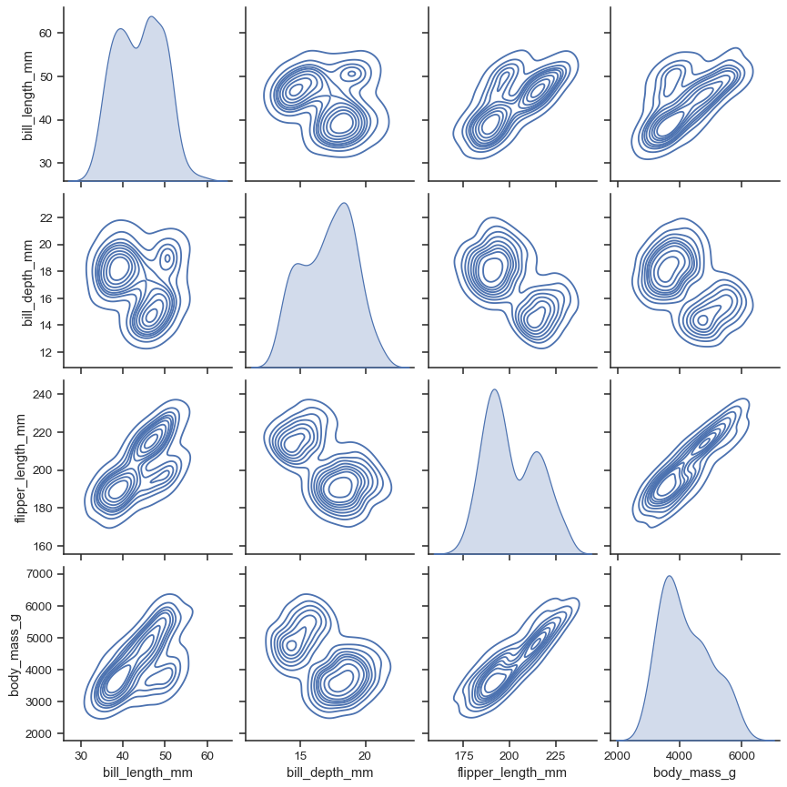
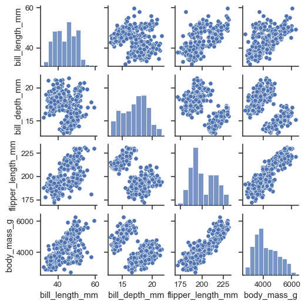
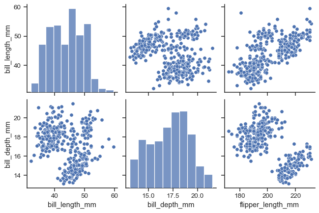

seaborn.pairplot#
- seaborn.pairplot(data, *, hue=None, hue_order=None, palette=None, vars=None, x_vars=None, y_vars=None, kind='scatter', diag_kind='auto', markers=None, height=2.5, aspect=1, corner=False, dropna=False, plot_kws=None, diag_kws=None, grid_kws=None, size=None)#
Plot pairwise relationships in a dataset.
By default, this function will create a grid of Axes such that each numeric variable in
datawill by shared across the y-axes across a single row and the x-axes across a single column. The diagonal plots are treated differently: a univariate distribution plot is drawn to show the marginal distribution of the data in each column.It is also possible to show a subset of variables or plot different variables on the rows and columns.
This is a high-level interface for
PairGridthat is intended to make it easy to draw a few common styles. You should usePairGriddirectly if you need more flexibility.- Parameters:
- data
pandas.DataFrame Tidy (long-form) dataframe where each column is a variable and each row is an observation.
- huename of variable in
data Variable in
datato map plot aspects to different colors.- hue_orderlist of strings
Order for the levels of the hue variable in the palette
- palettedict or seaborn color palette
Set of colors for mapping the
huevariable. If a dict, keys should be values in thehuevariable.- varslist of variable names
Variables within
datato use, otherwise use every column with a numeric datatype.- {x, y}_varslists of variable names
Variables within
datato use separately for the rows and columns of the figure; i.e. to make a non-square plot.- kind{‘scatter’, ‘kde’, ‘hist’, ‘reg’}
Kind of plot to make.
- diag_kind{‘auto’, ‘hist’, ‘kde’, None}
Kind of plot for the diagonal subplots. If ‘auto’, choose based on whether or not
hueis used.- markerssingle matplotlib marker code or list
Either the marker to use for all scatterplot points or a list of markers with a length the same as the number of levels in the hue variable so that differently colored points will also have different scatterplot markers.
- heightscalar
Height (in inches) of each facet.
- aspectscalar
Aspect * height gives the width (in inches) of each facet.
- cornerbool
If True, don’t add axes to the upper (off-diagonal) triangle of the grid, making this a “corner” plot.
- dropnaboolean
Drop missing values from the data before plotting.
- {plot, diag, grid}_kwsdicts
Dictionaries of keyword arguments.
plot_kwsare passed to the bivariate plotting function,diag_kwsare passed to the univariate plotting function, andgrid_kwsare passed to thePairGridconstructor.
- data
- Returns:
See also
Examples
The simplest invocation uses
scatterplot()for each pairing of the variables andhistplot()for the marginal plots along the diagonal:penguins = sns.load_dataset("penguins") sns.pairplot(penguins)
Assigning a
huevariable adds a semantic mapping and changes the default marginal plot to a layered kernel density estimate (KDE):sns.pairplot(penguins, hue="species")
It’s possible to force marginal histograms:
sns.pairplot(penguins, hue="species", diag_kind="hist")
The
kindparameter determines both the diagonal and off-diagonal plotting style. Several options are available, including usingkdeplot()to draw KDEs:sns.pairplot(penguins, kind="kde")
Or
histplot()to draw both bivariate and univariate histograms:sns.pairplot(penguins, kind="hist")
/Users/mwaskom/code/seaborn/seaborn/axisgrid.py:236: UserWarning: Legend does not support handles for QuadMesh instances. See: https://matplotlib.org/stable/tutorials/intermediate/legend_guide.html#implementing-a-custom-legend-handler handles, labels = ax.get_legend_handles_labels() /Users/mwaskom/code/seaborn/seaborn/axisgrid.py:236: UserWarning: Legend does not support handles for QuadMesh instances. See: https://matplotlib.org/stable/tutorials/intermediate/legend_guide.html#implementing-a-custom-legend-handler handles, labels = ax.get_legend_handles_labels() /Users/mwaskom/code/seaborn/seaborn/axisgrid.py:236: UserWarning: Legend does not support handles for QuadMesh instances. See: https://matplotlib.org/stable/tutorials/intermediate/legend_guide.html#implementing-a-custom-legend-handler handles, labels = ax.get_legend_handles_labels() /Users/mwaskom/code/seaborn/seaborn/axisgrid.py:236: UserWarning: Legend does not support handles for QuadMesh instances. See: https://matplotlib.org/stable/tutorials/intermediate/legend_guide.html#implementing-a-custom-legend-handler handles, labels = ax.get_legend_handles_labels() /Users/mwaskom/code/seaborn/seaborn/axisgrid.py:236: UserWarning: Legend does not support handles for QuadMesh instances. See: https://matplotlib.org/stable/tutorials/intermediate/legend_guide.html#implementing-a-custom-legend-handler handles, labels = ax.get_legend_handles_labels() /Users/mwaskom/code/seaborn/seaborn/axisgrid.py:236: UserWarning: Legend does not support handles for QuadMesh instances. See: https://matplotlib.org/stable/tutorials/intermediate/legend_guide.html#implementing-a-custom-legend-handler handles, labels = ax.get_legend_handles_labels() /Users/mwaskom/code/seaborn/seaborn/axisgrid.py:236: UserWarning: Legend does not support handles for QuadMesh instances. See: https://matplotlib.org/stable/tutorials/intermediate/legend_guide.html#implementing-a-custom-legend-handler handles, labels = ax.get_legend_handles_labels() /Users/mwaskom/code/seaborn/seaborn/axisgrid.py:236: UserWarning: Legend does not support handles for QuadMesh instances. See: https://matplotlib.org/stable/tutorials/intermediate/legend_guide.html#implementing-a-custom-legend-handler handles, labels = ax.get_legend_handles_labels() /Users/mwaskom/code/seaborn/seaborn/axisgrid.py:236: UserWarning: Legend does not support handles for QuadMesh instances. See: https://matplotlib.org/stable/tutorials/intermediate/legend_guide.html#implementing-a-custom-legend-handler handles, labels = ax.get_legend_handles_labels() /Users/mwaskom/code/seaborn/seaborn/axisgrid.py:236: UserWarning: Legend does not support handles for QuadMesh instances. See: https://matplotlib.org/stable/tutorials/intermediate/legend_guide.html#implementing-a-custom-legend-handler handles, labels = ax.get_legend_handles_labels() /Users/mwaskom/code/seaborn/seaborn/axisgrid.py:236: UserWarning: Legend does not support handles for QuadMesh instances. See: https://matplotlib.org/stable/tutorials/intermediate/legend_guide.html#implementing-a-custom-legend-handler handles, labels = ax.get_legend_handles_labels() /Users/mwaskom/code/seaborn/seaborn/axisgrid.py:236: UserWarning: Legend does not support handles for QuadMesh instances. See: https://matplotlib.org/stable/tutorials/intermediate/legend_guide.html#implementing-a-custom-legend-handler handles, labels = ax.get_legend_handles_labels()
The
markersparameter applies a style mapping on the off-diagonal axes. Currently, it will be redundant with thehuevariable:sns.pairplot(penguins, hue="species", markers=["o", "s", "D"])

As with other figure-level functions, the size of the figure is controlled by setting the
heightof each individual subplot:sns.pairplot(penguins, height=1.5)
Use
varsorx_varsandy_varsto select the variables to plot:sns.pairplot( penguins, x_vars=["bill_length_mm", "bill_depth_mm", "flipper_length_mm"], y_vars=["bill_length_mm", "bill_depth_mm"], )
Set
corner=Trueto plot only the lower triangle:sns.pairplot(penguins, corner=True)
The
plot_kwsanddiag_kwsparameters accept dicts of keyword arguments to customize the off-diagonal and diagonal plots, respectively:sns.pairplot( penguins, plot_kws=dict(marker="+", linewidth=1), diag_kws=dict(fill=False), )
The return object is the underlying
PairGrid, which can be used to further customize the plot:g = sns.pairplot(penguins, diag_kind="kde") g.map_lower(sns.kdeplot, levels=4, color=".2")